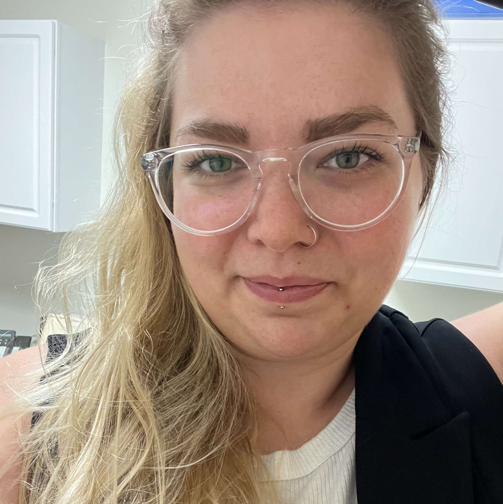
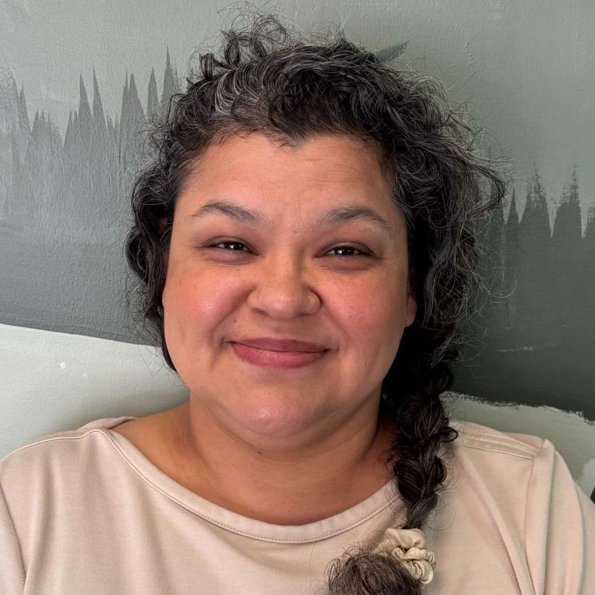

Enrollment Appointment
For families who are new to the SNACK Program.
30 minutes · FreeFree, child-centered nutrition education for children and families in Yamhill County.
Book an AppointmentFamily Nutrition Appointments
Kids and Teen Cooking Classes
Meet Your Nutrition Educators

Executive Director
Shannon has a Master's degree in Nutrition and specializes in adapting nutrition education for children and teens.

Nutrition Coordinator
Cynthia has a Doctorate in Clinical Nutrition and focuses on making nutrition practical, engaging, and easy to apply.
Our Mission
Our mission is simple: improve the health and wellness of children and youth in Yamhill County. SNACK offers free nutrition education and wellness activities designed to empower children and families to build sustainable, lifelong healthy habits. We strive to maintain equitable access to our services and address the diverse cultural and socioeconomic needs of the families we serve.
Nuestra misión es simple: mejorar la salud y el bienestar de los niños y jóvenes del condado de Yamhill. SNACK ofrece educación nutricional gratuita y actividades de bienestar diseñadas para empoderar a niños y familias a desarrollar hábitos saludables sostenibles para toda la vida. Nos esforzamos por mantener un acceso equitativo a nuestros servicios y atender las diversas necesidades culturales y socioeconómicas de las familias a las que servimos.
Inside The Program
Good to Know
Please list every child who will attend the appointment. The SNACK office is inside Physicians' Medical Center. When you enter, head to the left and check in at Reception A. Appointments may be booked up to three months in advance.
Por favor, incluya a todos los niños que asistirán a la cita. La oficina de SNACK está dentro de Physicians' Medical Center. Al entrar, diríjase a la izquierda y regístrese en la Recepción A. Las citas se pueden reservar con hasta tres meses de anticipación.
You can cancel or reschedule anytime before the appointment time. If you need to cancel or reschedule an appointment within 24 hours of the appointment time, please call or text (971) 202-0232.
Your booking confirmation includes a private link you can use to cancel or choose a new time.
Puede cancelar o reprogramar su cita en cualquier momento antes de la hora programada. Si necesita cancelar o reprogramar dentro de las 24 horas previas a la cita, llame o envíe un mensaje de texto al (971) 202-0232.
La confirmación de su cita incluye un enlace privado que puede usar para cancelar o elegir una nueva hora.
Questions?
Located inside Physicians' Medical Center
2435 NE Cumulus Ave, Suite A